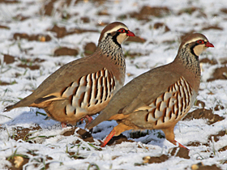
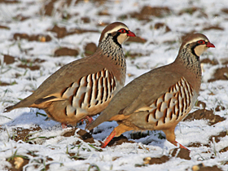

Saskatchewan Food and Drink
You can find a good selection of restaurants in all the province's cities and major towns catering
to all tastes and budgets. Alcohol is sold only in licensed stores, licensed restaurants, cocktail lounges,
and dining and beverage rooms. Retail outlets operate throughout the province.
Specialities:
- Whitefish and pickerel are marketed by aboriginal (First Nations) co-operatives.
- Wild rice harvested by First Nations people is an excellent accompaniment to the abundant wild fowl which
includes partridge, prairie chicken, wild duck and goose.
- Saskatoon berries, similar to blueberries, are used for jams, jellies and saskatoon berry pie, often eaten with fresh
cream. Other wild berries include pinchberries and cranberries, which make a tart and tangy jelly, ideal with wild fowl meals.

 
